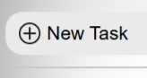

This website provides information and resources to help users understand the features and functionalities available. The website was created so that you could properly and easily manage your daily tasks and activities.
Αυτός ο ιστότοπος παρέχει πληροφορίες και πόρους που βοηθούν τους χρήστες να κατανοήσουν τις διαθέσιμες δυνατότητες και λειτουργίες. Ο ιστότοπος δημιουργήθηκε έτσι ώστε να μπορείτε να διαχειρίζεστε σωστά και εύκολα τις καθημερινές σας εργασίες και δραστηριότητες
 You start by pressing the "New Task" button to create a new task. A modal will appear where you can enter the task name, due date, priority, group and a description. After filling in the details, click outside the modal or on the close icon to save and close it.
Ξεκινάτε πατώντας το κουμπί "New Task" για να δημιουργήσετε μια νέα εργασία. Θα εμφανιστεί ένα παράθυρο διαλόγου όπου μπορείτε να εισαγάγετε το όνομα της εργασίας, την ημερομηνία λήξης, την προτεραιότητα, την ομάδα και μια περιγραφή. Αφού συμπληρώσετε τις λεπτομέρειες, κάντε κλικ έξω από το παράθυρο διαλόγου ή στο εικονίδιο κλεισίματος για να αποθηκεύσετε και να το κλείσετε.